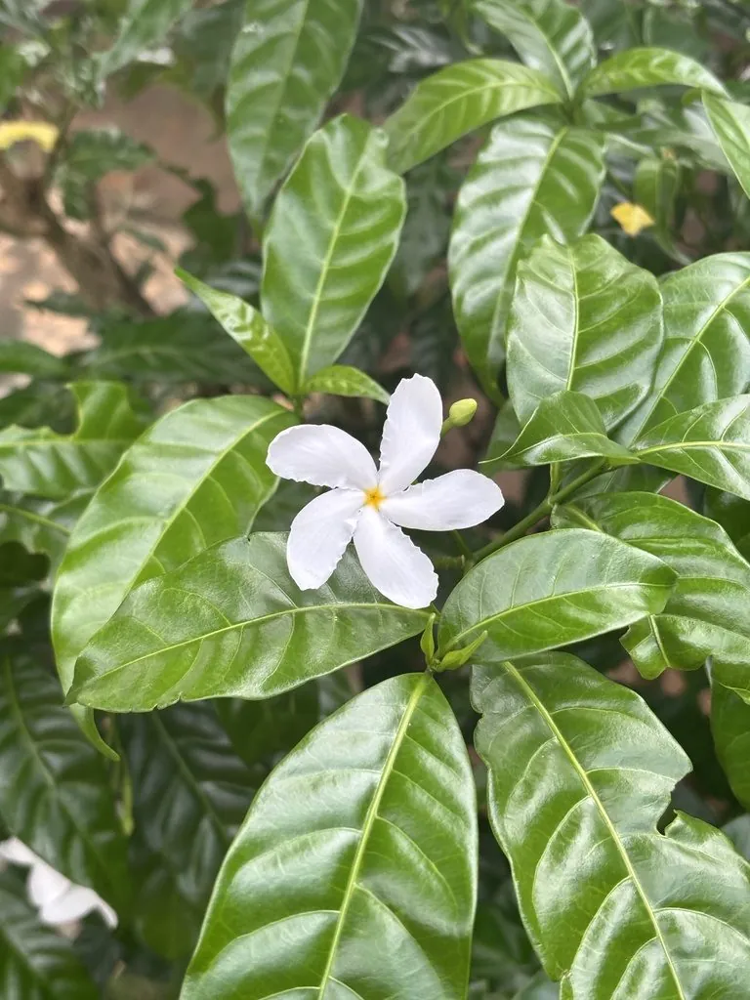

灌木与花木 · 植物界
狗牙花 Tabernaemontana divaricata

夹竹桃科狗牙花属常绿灌木，花白色、花瓣边缘皱曲如狗牙，清香宜人，是南方庭园常见的绿篱与观赏灌木。
- 分类
- 门被子植物门纲木兰纲目龙胆目科夹竹桃科属狗牙花属
- 栖息环境
- 海拔 1000 米以下的林下与溪边，喜温暖湿润半阴
- 地理分布
- 中国广东、广西、福建、海南、云南、台湾；印度、缅甸、泰国等
- 保护级别
- 暂无评估；未被列入国家重点保护野生植物名录
物种志
狗牙花为夹竹桃科狗牙花属常绿灌木，高一至三米，分枝多，茎干有乳汁。叶片对生，革质，椭圆状披针形，全缘，表面深绿有光泽。花数朵组成聚伞花序，花冠白色，高脚碟状，花瓣五枚，边缘呈波状皱曲，形似狗牙，花期六月至十一月，具清香；蓇葖果双生，成熟时红色开裂，果期秋冬季。
狗牙花分布于中国广东、广西、福建、海南、云南、台湾等地，印度、缅甸、泰国等亚洲热带地区也有，多生于林下和溪边。它喜温暖湿润和半阴环境，适宜疏松肥沃、排水良好的酸性土壤，不耐寒。花白而香、花期长，是南方庭园、绿篱和盆栽的常见观赏植物；根和叶在民间入药，有清热解毒之效，但乳汁有毒，使用时需谨慎。
形态与习性
- 株高1–3 m，分枝多
- 花期6–11 月，花白色、清香
- 果期秋冬季，蓇葖果红色
- 光照喜半阴，忌烈日暴晒
- 水分喜湿润，忌积水
- 土壤疏松肥沃的酸性土
- 主要用途庭园绿篱、盆栽观赏
趣味知识
- 狗牙花的花瓣边缘呈波浪状皱曲，形似狗牙，因此得名。
- 它的花在夜间香气更浓，是南方夏夜庭园里的香花植物。
- 狗牙花与夹竹桃同科，茎干折断后会流出白色乳汁，汁液有毒。